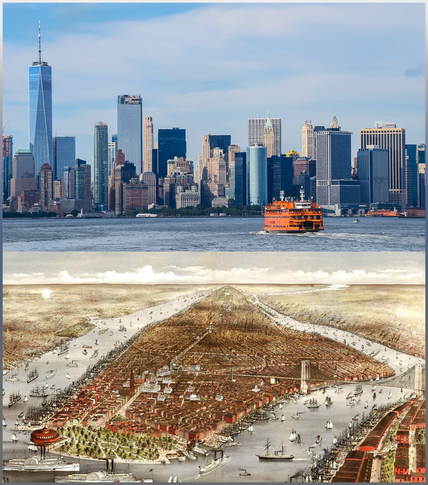

Sons of Liberty
The written history of New York City began with the first European explorer Giovanni da Verrazzano in 1524. European settlement began with the Dutch in 1609.
The "Sons of Liberty" destroyed British authority in New York City, and the Stamp Act Congress of representatives from throughout the Thirteen Colonies met in the city in 1765 to organize resistance to British policies. The city's strategic location and status as a major seaport made it the prime target for British seizure in 1776. General George Washington lost a series of battles from which he narrowly escaped (with the notable exception of the Battle of Harlem Heights, his first victory of the war), and the British Army controlled New York City and made it their base on the continent until late 1783, attracting Loyalist refugees.
The city served as the national capital under the Articles of Confederation from 1785-1789, and briefly served as the new nation's capital in 1789–90 under the United States Constitution that replaced it. Under the new government the city hosted the inauguration of George Washington as the first President of the United States, the drafting of the United States Bill of Rights, and the first Supreme Court of the United States. The opening of the Erie Canal gave excellent steamboat connections with upstate New York and the Great Lakes, along with coastal traffic to lower New England, making the city the preeminent port on the Atlantic Ocean.
The arrival of rail connections to the north and west in the 1840s and 1850s strengthened its central role. Beginning in the mid-18th century, waves of new immigrants arrived from Europe dramatically changing the composition of the city and serving as workers in the expanding industries. Modern New York City traces its development to the consolidation of the five boroughs in 1898 and an economic and building boom following the Great Depression and World War II. Throughout its history, New York City has served as a main port of entry for many immigrants, and its cultural and economic influence has made it one of the most important urban areas in the United States and the world. 